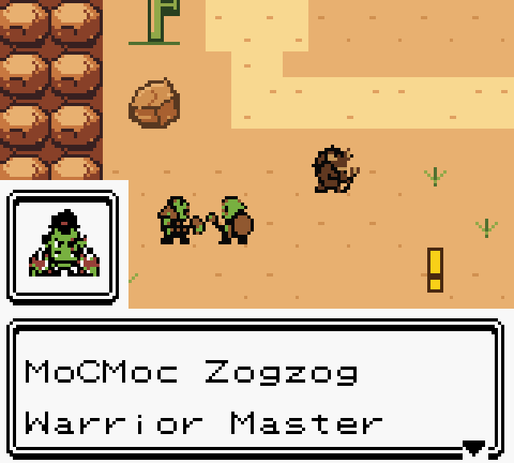
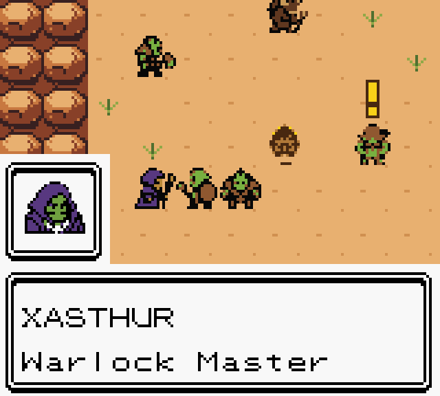
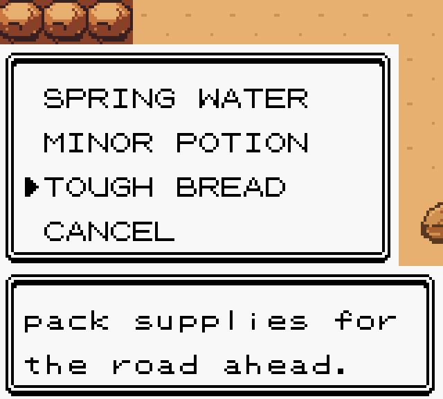
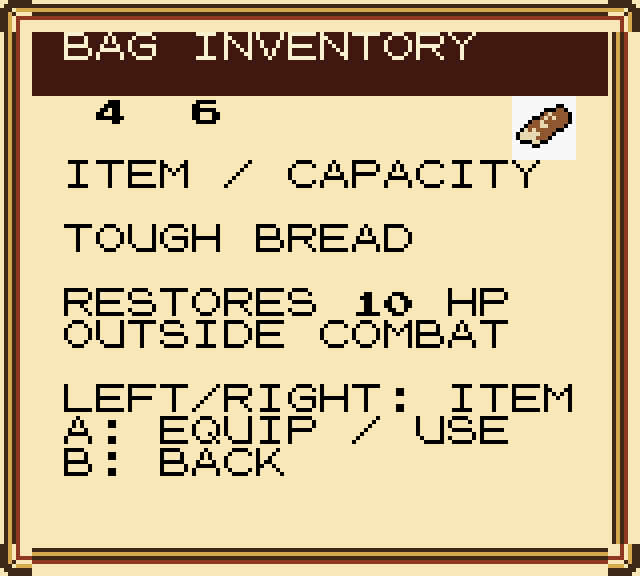
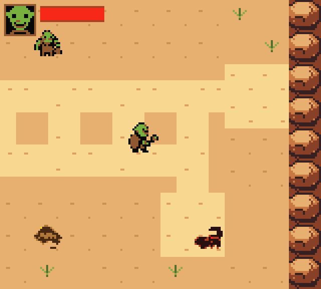
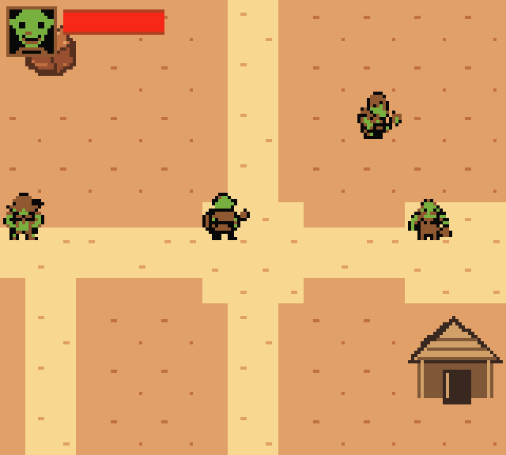
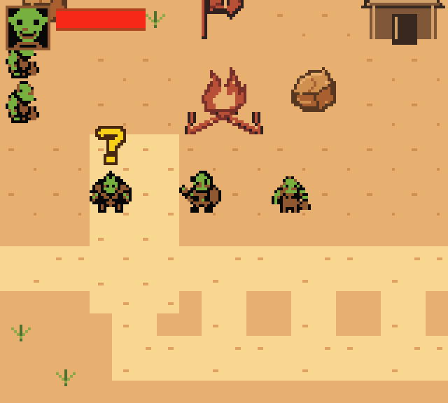

Actual Game Boy Color ROM captures, controlled with ordinary buttons. The Warrior and Warlock masters speak with the apprentice while their class routes remain locked. Three vendors share supply stock and use their own introductions. The two added camp roles are original prototype NPCs. Existing locations, map IDs and character progress are retained.
Tough Hunk of Bread: five for 25 copper, checked against CMaNGOS Classic DB item4540 and Duokna3158 stock. The short bag label is TOUGH BREAD. Its immediate ten-HP heal outside battle is a prototype adaptation of Classic's timed food regeneration.
Runtime results and ROM hash · Scope and limits






